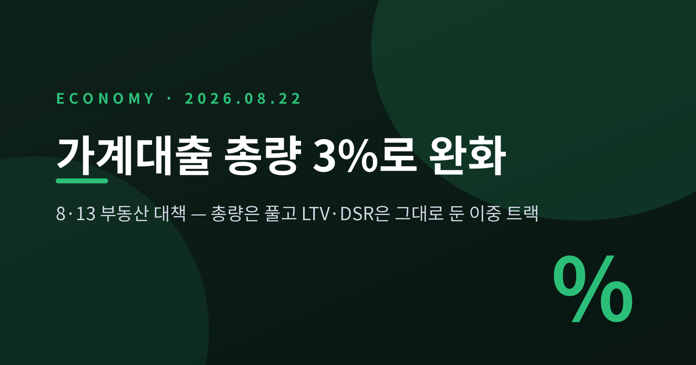
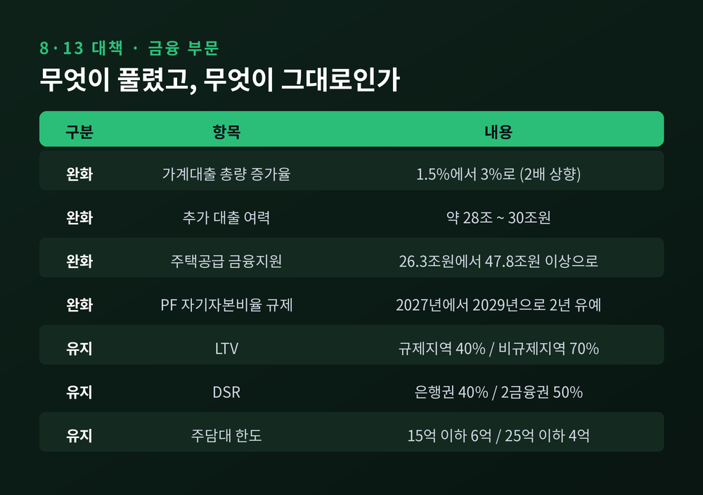
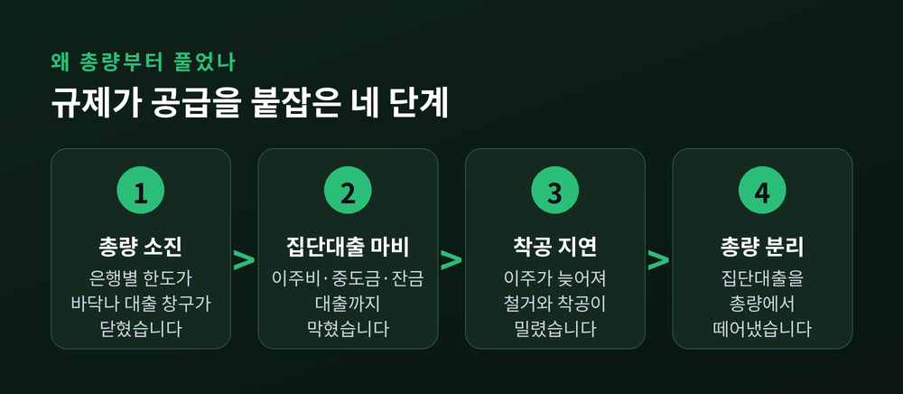
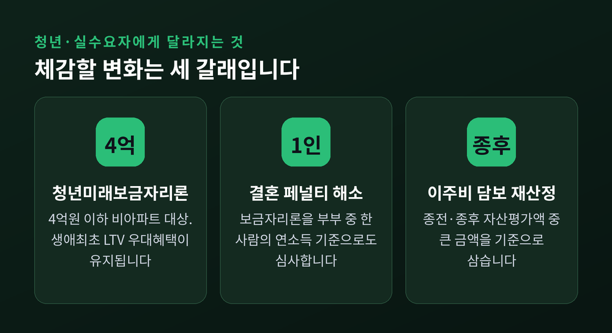
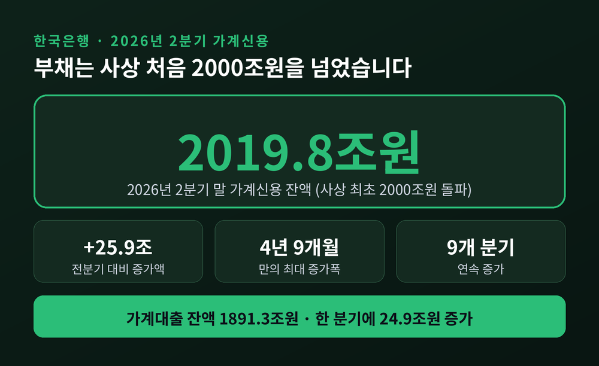
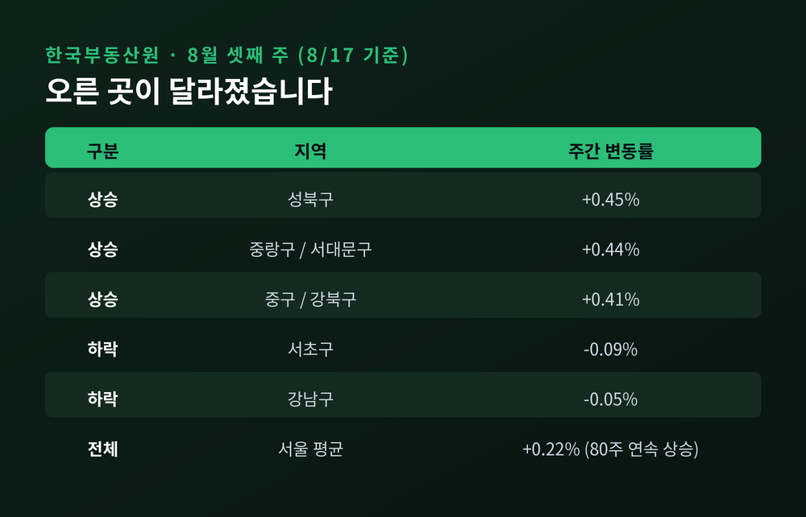
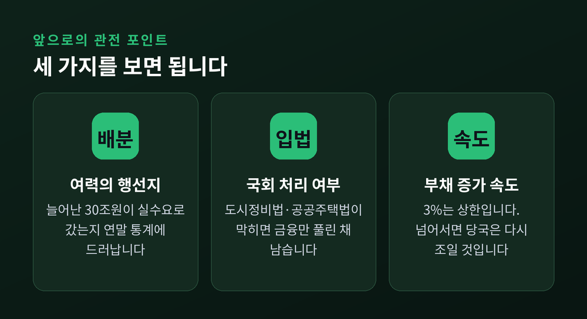

가계대출 총량 규제 3%로 완화, 8·13 대책이 남긴 기회와 위험

이번 글에서는 8·13 부동산 대책의 금융 부분을 정리해 보겠습니다. 정부는 올해 가계대출 총량 증가율 목표를 1.5%에서 3%로 두 배 올렸습니다. 그런데 LTV와 DSR 같은 개별 규제는 손대지 않았습니다. 왜 한쪽만 풀었는지, 그리고 그 선택이 무엇을 남기는지 살펴보겠습니다.
세 줄 요약
- 금융위원회는 2026년 8월 13일 '부동산 시장 안정을 위한 금융 종합대책'을 통해 가계대출 총량 증가율 목표를 1.5%에서 3%로 상향했습니다. 약 28조~30조원의 추가 대출 여력이 생깁니다.
- 반면 규제지역 LTV 40%, 은행권 DSR 40%, 주담대 한도 6억원 같은 개별 차주 규제는 그대로 유지됩니다. 총량은 풀고 개별 규제는 조인 '이중 트랙'입니다.
- 발표 직전 분기 가계신용은 사상 처음 2000조원을 넘었습니다. 기회와 위험이 같은 자리에 놓여 있습니다.
총량은 풀고, 개별 규제는 그대로 두었습니다
2026년 8월 13일 오전, 이억원 금융위원장이 정부서울청사에서 대책을 발표했습니다. 같은 날 국토교통부는 수도권 23만 가구+α 추가 공급 방안을 내놓았습니다. 공급과 금융, 두 축이 한 세트로 묶인 발표였습니다.
금융 쪽 골자는 세 가지입니다.
첫째, 주택공급을 위한 금융지원 규모를 26조 3000억원에서 47조 8000억원+α로 늘립니다. 둘째, 올해 금융권에 부여한 가계부채 총량 증가율 관리 목표를 1.5%에서 3% 수준으로 확대합니다. 셋째, LTV·DSR·주담대 한도는 손대지 않습니다.
세 번째가 이번 대책의 성격을 결정합니다. 규제지역 주택담보인정비율(LTV)은 40%, 비규제지역은 70%로 그대로입니다. 총부채원리금상환비율(DSR)도 은행권 40%, 2금융권 50%가 유지됩니다. 주택 가격대별 주담대 한도 역시 15억원 이하 6억원, 25억원 이하 4억원, 25억원 초과 2억원으로 묶여 있습니다. 정부는 이 한도를 "시장이 확고히 안정될 때까지" 이어가겠다고 밝혔습니다.

풀린 것과 묶인 것을 나란히 놓으면 그림이 분명해집니다. 파이는 커졌지만 한 사람이 가져갈 수 있는 몫은 그대로입니다. 대출을 받을 수 있는 사람의 수와 순번이 늘어난 것이지, 1인당 한도가 늘어난 것이 아닙니다.
왜 총량부터 풀었을까
지난해까지 금융당국의 화두는 조이기였습니다. 6·27 대책 이후 수요 관리 기조는 한 번도 흔들리지 않았습니다. 그런데 부작용이 현장에 쌓였습니다.
은행마다 배정된 총량이 연중에 소진되면서 대출 창구가 닫혔습니다. 새벽에 줄을 서는 '오픈런', 이 은행 저 은행을 도는 '대출 뺑뺑이', 연말 '대출 셧다운'이라는 말이 나왔습니다. 문제는 이 벽에 부딪힌 쪽이 투기 수요만이 아니었다는 점입니다. 재건축 조합원의 이주비, 입주를 앞둔 세대의 중도금과 잔금 대출까지 함께 막혔습니다.
이주비가 나오지 않으면 조합원이 집을 비우지 못합니다. 집을 비우지 못하면 철거가 늦어지고, 착공은 더 밀립니다. 공급을 앞당기겠다는 정부 목표와 총량 규제가 정면으로 부딪힌 셈입니다.
이억원 위원장은 이 대책의 원칙을 이렇게 정리했습니다.
"투기적 자금은 더 엄격히 관리하고, 주택공급과 실수요에는 금융이 보다 적극적인 역할을 하는 것"

늘어난 28조원은 어디로 가나
증가한 여력의 규모는 매체마다 표기가 조금씩 다릅니다. 추가 여력을 약 28조원으로 본 곳도 있고, 30조원으로 계산한 곳도 있습니다. 연간 총 증가 허용치로 환산하면 60조원 내외라는 분석도 나왔습니다. 기준이 다를 뿐 서로 모순되는 숫자는 아닙니다.
중요한 것은 이 돈에 꼬리표가 달려 있다는 사실입니다. 금융위원회는 늘어난 대출 여력을 세 가지 목적으로만 쓰도록 제한했습니다. 주택공급 촉진을 위한 이주비·중도금·잔금 대출, 청년 주거안정, 그리고 실수요자 애로 해소입니다.
방식도 바뀌었습니다. 이주비·중도금·잔금 같은 집단대출은 금융회사별 총량관리 대상에서 아예 빠졌습니다. 대신 당국이 유보분으로 별도 관리합니다. 은행이 자기 총량을 걱정하지 않고 집단대출을 취급할 수 있게 된 것입니다.
배분 작업도 이미 시작됐습니다. 8월 19일 금융위원회와 금융감독원은 14개 은행을 소집해 첫 실무회의를 열었습니다. 6대 은행과 지방은행 6곳, 수협은행, 카카오뱅크가 참석했습니다. 5대 은행의 주택담보대출 여력만 7조원 이상 늘어날 것이라는 전망이 나왔습니다.
공급 쪽 지원도 구체적입니다. 부동산 프로젝트파이낸싱(PF) 보증을 올해 23조원, 내년 33조원 공급합니다. 캠코 PF정상화펀드 3조원을 마중물로 은행·보험권 신디케이트론 5조원과 금융업권 자체펀드 10조원을 붙여 공사가 멈춘 사업장을 되살린다는 계획입니다. 2027년 시행 예정이던 주거사업장 PF 자기자본비율 규제는 2029년으로 2년 미뤘습니다.
청년과 실수요자에게 실제로 달라지는 것
체감할 변화는 세 갈래입니다.
먼저 이주비대출의 담보 평가 기준이 바뀝니다. 지금까지는 정비사업 시작 전 조합원이 보유한 자산 가치, 즉 종전자산평가액을 기준으로 삼았습니다. 8월 31일부터는 종전자산평가액과 사업 완료 후 신축주택 추산 가치인 종후자산평가액 가운데 큰 금액을 씁니다. 같은 LTV 40%라도 담보 인정 금액 자체가 커집니다.
다음은 청년입니다. 정부는 2027년 1월 '청년 주거지원 3종 세트'를 내놓습니다. 핵심은 '청년미래보금자리론'입니다. 가격 4억원 이하, 전용면적 85㎡ 이하 오피스텔·빌라 같은 비아파트가 대상입니다. 일반 보금자리론과 달리 생애최초 LTV 우대혜택이 그대로 유지됩니다.
이른바 결혼 페널티도 손봅니다. 보금자리론 소득요건은 미혼 1인 7000만원 이하, 신혼부부 부부합산 8500만원 이하로 적용돼 왔습니다. 앞으로는 부부 중 한 사람의 연소득 기준으로도 심사받을 수 있습니다. 생애최초 요건도 완화됩니다. 미성년 시절 주택 지분을 상속받은 것처럼 불가피한 사유가 있으면 8월 31일부터 예외를 인정합니다.

다만 아쉬운 대목이 있습니다. 기존 주택을 사려는 생애최초 차주에게 별도 한도를 배정하는 방안은 이번 대책에 담기지 않았습니다. 신축과 정비사업 관련 대출이 우선순위를 차지하면서, 정작 첫 집을 사려는 무주택자가 후순위로 밀릴 수 있다는 지적이 나옵니다.
조인 쪽도 분명히 있습니다
총량만 보면 완화지만, 다른 한편에서는 규제가 강해졌습니다.
내년부터 비거주 1주택자의 전세대출 보증이 제한됩니다. 수도권·규제지역 아파트를 가진 1주택자가, 그 집을 가족이 아닌 사람에게 임대하면서, 본인이나 배우자가 한 번도 살아본 적이 없는 경우가 대상입니다. 세 조건을 모두 충족해야 합니다. 하루라도 실거주한 이력이 있으면 제외됩니다. 실거주 의사 없이 집을 보유하는 것을 투기로 보겠다는 기준입니다.
은행 자본규제도 강화됩니다. 고액·고DSR 주담대와 고가주택·고LTV 주담대가 고위험 대출 범주에 새로 들어가 위험가중치가 올라갑니다. 가계부채가 국내총생산(GDP) 대비 일정 수준을 넘으면 은행별 주담대 비중에 따라 추가 자본을 쌓게 하는 가계부문 시스템리스크 완충자본도 도입됩니다.
예전에는 총량 하나로 모두를 눌렀습니다. 지금은 총량을 풀되 목적과 대상을 골라 조입니다. 규제의 무게중심이 '양'에서 '질'로 옮겨간 셈입니다.
위험 — 가계부채는 사상 처음 2000조원을 넘었습니다
이 대책이 놓인 자리를 보면 낙관만 하기는 어렵습니다.
한국은행 집계에 따르면 2026년 2분기 말 가계신용 잔액은 2019조 8000억원입니다. 사상 처음 2000조원을 돌파했습니다. 직전 분기 1993조 9000억원에서 25조 9000억원이 늘었고, 증가 폭은 2021년 3분기 이후 4년 9개월 만에 가장 컸습니다. 2024년 2분기부터 아홉 개 분기 연속 증가입니다. 가계대출만 보면 1891조 3000억원으로 한 분기에 24조 9000억원 불었습니다.
원인은 두 갈래로 짚힙니다. 부동산 거래 회복에 올라탄 '영끌'과 주식 활황장을 좇은 '빚투'가 동시에 맞물렸습니다.

시점이 미묘합니다. 부채가 사상 최대를 찍은 직후에 총량 규제를 풀었기 때문입니다. 8월 들어 가계대출 증가세가 잠시 주춤했지만, 8·13 대책으로 다시 튈 수 있다는 우려가 곧바로 제기됐습니다.
찬반이 갈리는 지점
이 대책을 두고 평가는 정확히 반으로 나뉩니다.
찬성 쪽 논거는 이렇습니다. 공급은 시간이 걸립니다. 택지를 지정하고 착공해 입주까지 가려면 최소 수년입니다. 그 사이 이주비와 잔금 대출이 막혀 사업이 멈추면 공급 시차는 더 길어집니다. 늘어난 여력에 목적 제한이 걸려 있으니 투기 자금으로 새기도 어렵다는 반박도 있습니다.
반대 쪽 논거도 만만치 않습니다. 한 부동산학과 교수는 청년·실수요자 대출 한도를 늘리는 것이 "집값을 자극하는 잘못된 신호"라고 지적했습니다. 대출이 늘면 집값은 오르게 되어 있으니, 저렴한 주택 공급을 늘리는 쪽이 정공법이라는 주장입니다. 참여연대 민생희망본부는 긴급좌담회를 열어 청년 대상 보증금 대출 확대가 전세사기와 깡통전세 사태에서 얻은 교훈에 역행한다고 비판했습니다. 부채의 질이 나빠지면 개인 파산이 늘고 세대·계층 간 자산 격차가 벌어질 수 있다는 우려도 함께 나왔습니다.
언론의 시선도 '공급 시차'와 '부채 뇌관'으로 쪼개졌습니다. 어느 쪽도 사실을 왜곡하고 있지는 않습니다. 같은 정책의 다른 면을 보고 있을 뿐입니다.
업권 내부의 온도차도 있습니다. 집단대출이 총량에서 빠지자, 집단대출 취급이 제한된 상호금융권에서는 실익이 적다는 반응이 나왔습니다.
국회와 시장은 어떻게 움직였나
정책이 완성되려면 법이 따라와야 합니다. 그런데 그 지점에서 막혔습니다.
8월 20일 열린 8월 임시국회 첫 본회의에서 여야가 정면으로 부딪혔습니다. 더불어민주당은 재개발·재건축 기간을 줄이는 도시정비법, 공공택지 공급에 속도를 내는 공공주택법, 학교용지 복합개발 특별법 처리를 밀어붙였습니다. 국민의힘은 정부 부동산 정책의 기조 자체에 문제가 있다며 일괄 처리에 반대했습니다. 시장에서 자발적인 매물과 임대 공급이 나오도록 유도하는 방향으로 바꿔야 한다는 것이 야당의 논리입니다. 이견이 없는 민생법안에는 협조하되 부동산 법안은 선별 대응하겠다는 입장을 밝혔습니다.
시장 반응은 엇갈렸습니다. 한국부동산원 집계로 8월 셋째 주 서울 아파트 매매가격은 전주보다 0.22% 올라 80주 연속 상승을 이어갔습니다. 다만 오른 곳이 달라졌습니다. 성북구가 0.45%, 중랑구와 서대문구가 각각 0.44% 뛴 반면, 서초구는 0.09%, 강남구는 0.05% 내렸습니다. 고가주택 매수 여력이 대출 규제에 눌리면서 중저가 단지로 수요가 옮겨간 풍선효과로 해석됩니다.

금융시장은 별개의 변수에 흔들렸습니다. 8월 21일 코스피는 미국 금리와 소비 우려로 92.63포인트(1.35%) 내린 6759.95에 출발했습니다. 원·달러 환율은 1389.7원에서 문을 열었습니다. 다만 장중 반도체 대형주의 주주환원 기대가 살아나면서 지수는 6912.95로 0.88% 올라 마감했습니다. 부동산 금융 정책과 증시가 같은 방향으로 움직이지는 않는다는 점을 보여준 하루였습니다.
앞으로 무엇을 지켜봐야 하나
세 가지를 보면 됩니다.
첫째, 배분입니다. 늘어난 여력이 실제로 이주비·중도금·잔금과 청년 지원에 흘러갔는지, 아니면 일반 주담대로 새어 나갔는지가 연말 통계에 드러납니다.
둘째, 입법입니다. 도시정비법과 공공주택법이 통과되지 않으면 금융만 풀린 채 공급은 제자리에 머물 수 있습니다.
셋째, 부채 증가 속도입니다. 3% 목표는 상한이지 하한이 아닙니다. 목표를 넘어서는 순간 당국은 다시 조이는 쪽으로 돌아설 수밖에 없습니다.

정리하면 이렇습니다.
8·13 대책은 문을 활짝 연 것이 아니라, 문턱은 그대로 둔 채 문을 여는 시간을 늘린 정책입니다. 이주를 앞둔 조합원과 입주를 기다리는 세대에게는 숨통이 트일 것입니다. 반면 첫 집을 사려는 무주택자에게는 순번이 여전히 뒤에 있습니다.
"총량은 풀었지만, 한 사람의 한도는 그대로다."
이 문장 하나가 이번 대책의 전부입니다. 대출 여력이 늘었다는 소식만 듣고 계획을 앞당기시기 전에, 본인의 DSR과 담보 한도를 먼저 계산해 보시길 권합니다. 늘어난 것은 은행의 여유이지, 나의 한도가 아니기 때문입니다.
부채가 2000조원을 넘어선 지금, 정책이 남긴 여유를 기회로 볼지 위험으로 볼지는 결국 각자의 상환 능력에 달려 있습니다. 그 계산만큼은 누구도 대신해 주지 않습니다.
투자 권유가 아닙니다. 이 글은 공개된 보도자료와 언론 보도를 정리한 정보성 콘텐츠이며, 특정 자산의 매수·매도나 대출 실행을 권유하지 않습니다. 정책 세부 내용과 시행 시기는 이후 변경될 수 있으므로 실제 의사결정 전에는 금융위원회·국토교통부의 공식 발표와 거래 금융기관의 안내를 반드시 확인하시기 바랍니다. 투자와 대출에 따른 책임은 본인에게 있습니다.